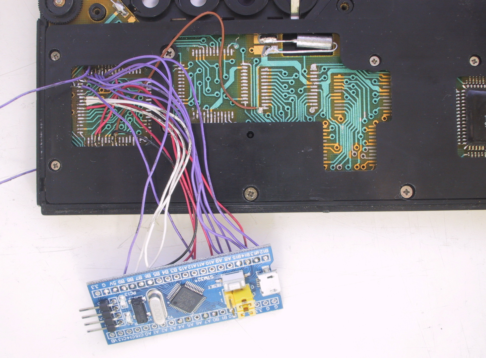
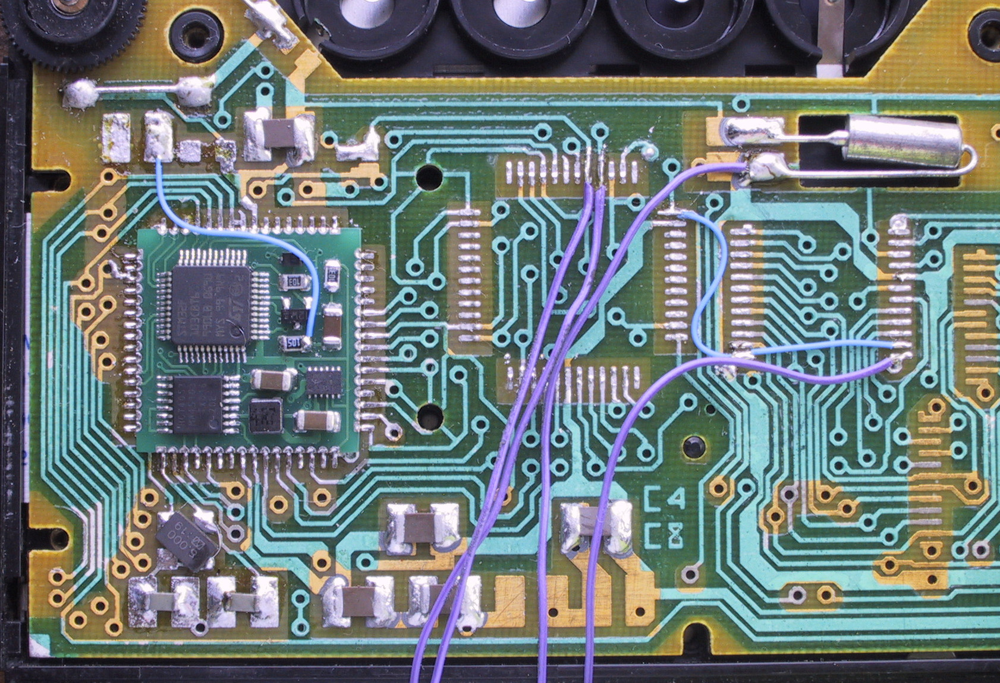
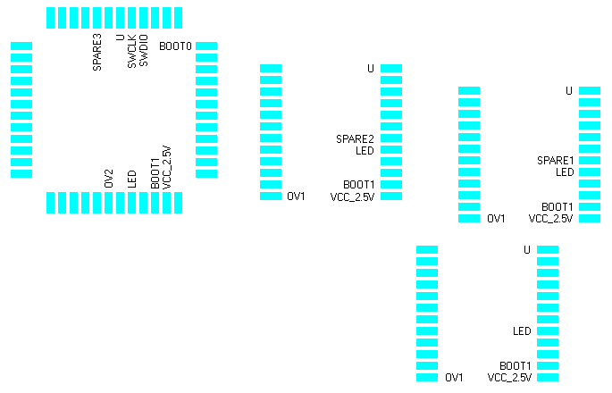

| Index | wersja polska
|
I got an MK-85 with a bad microprocessor. As the original microprocessor is rather unobtainable, I decided to replace it (along with the ROM and RAM chips) with an STM32F103C8T6 microcontroller. So the original BASIC interpreter (written in PDP-11 assembler) had to be ported as accurately as possible to the C language. Some known bugs have also been fixed.
Contents of the stmk85.zip archive:
Due to limited space in the calculator, the board thickness of about 1mm is recommended.

Differences from the schematic:

Apart from the original integrated circuits, the resistor R10=2MΩ and the capacitor C17=0.15μF must be desoldered from the calculator. The diode VD1=КД521А in the power circuit must be replaced with a jumper. The ON_SW signal is connected with a blue wire to the junction of the R10 resistor and the C17 capacitor.
The components of the original clock generator (resistors R1, R2 and capacitors C2, C3) are no longer needed. They can be left in place or removed. I soldered an 8MHz crystal resonator and two 15pF capacitors in their place. One day they may be wired to the PD0 and PD1 pins of the microprocessor, which would allow to use the USB port.
Signals from the board are available on the pads left after desoldering the ROM and RAM chips. The purple wires visible on the photo go to an ST-LINK programmer.

10 FOR X=0 TO 59 20 DRAW X, 3.5+3.5*SIN(20*X) 30 NEXT X